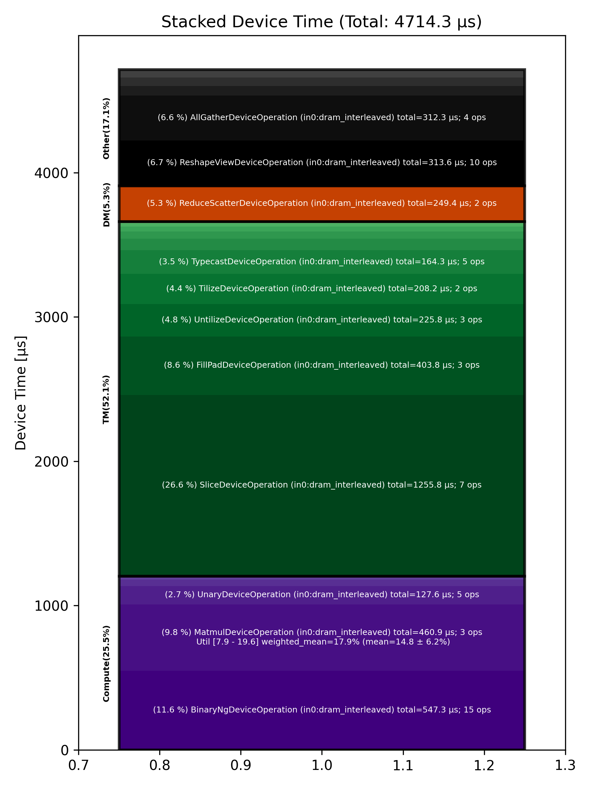

🚀 Performance Report 🚀 ======================== ID Total % Bound OP Code Device Device Time Op-to-Op Gap Cores DRAM DRAM % FLOPs FLOPs % Math Fidelity ------------------------------------------------------------------------------------------------------------------------------------------------------------------------- 5 0.0 % TypecastDeviceOperation 27 57 μs 72 BF16 => FP32 58 0.0 % UnaryDeviceOperation 16 69 μs 188 μs 72 FP32 => FP32 70 0.0 % FillPadDeviceOperation 3 80 μs 11 μs 64 FP32 => FP32 123 0.0 % ReduceDeviceOperation 17 35 μs 210 μs 64 FP32 => FP32 132 0.0 % ReshapeViewDeviceOperation 26 24 μs 52 μs 2 FP32 => FP32 177 0.0 % AllGatherDeviceOperation 0 16 μs 347 μs 8 FP32 => FP32 208 0.0 % FillPadDeviceOperation 5 9 μs 86 μs 4 FP32 => FP32 244 0.0 % TransposeDeviceOperation 22 6 μs 201 μs 72 FP32 => FP32 276 0.0 % ReduceDeviceOperation 22 5 μs 89 μs 64 FP32 => FP32 296 0.0 % TransposeDeviceOperation 1 3 μs 152 μs 72 FP32 => FP32 353 0.0 % ReshapeViewDeviceOperation 8 9 μs 104 μs 64 FP32 => FP32 383 0.0 % BinaryNgDeviceOperation 10 15 μs 222 μs 72 FP32, FP32 => FP32 415 0.0 % BinaryNgDeviceOperation 10 15 μs 263 μs 72 FP32, FP32 => FP32 421 0.0 % UnaryDeviceOperation 27 5 μs 243 μs 64 FP32 => FP32 460 0.0 % BinaryNgDeviceOperation 30 80 μs 318 μs 72 FP32, FP32 => FP32 502 0.0 % BinaryNgDeviceOperation 15 87 μs 227 μs 72 FP32, FP32 => FP32 522 0.0 % TypecastDeviceOperation 28 46 μs 193 μs 72 FP32 => BF16 563 0.0 % ReshapeViewDeviceOperation 21 26 μs 236 μs 46 BF16 => BF16 608 0.0 % UntilizeWithUnpaddingDeviceOperation 9 26 μs 226 μs 2 BF16 => BF16 634 0.0 % RepeatDeviceOperation 16 9 μs 69 μs 72 BF16 => BF16 648 0.0 % TilizeWithValPaddingDeviceOperation 1 22 μs 156 μs 8 BF16 => BF16 692 0.0 % SLOW MatmulDeviceOperation 64 x 736 x 5760 12 209 μs 579 μs 60 97 GB/s 33.8 % 10.4 TFLOPs 16.9 % HiFi4 BF16 x BFP8 => BF16 721 0.0 % ReduceScatterDeviceOperation 0 96 μs 404 μs 24 BF16 => BF16 753 0.0 % AllGatherDeviceOperation 0 92 μs 346 μs 40 BF16 => BF16 799 0.0 % BinaryNgDeviceOperation 10 49 μs 78 μs 72 BF16, BF16 => BF16 804 0.0 % UntilizeDeviceOperation 26 111 μs 138 μs 60 BF16 => BF16 864 0.0 % SliceDeviceOperation 9 608 μs 151 μs 72 BF16 => BF16 897 0.0 % TilizeDeviceOperation 8 104 μs 1 μs 45 BF16 => BF16 928 0.0 % UnaryDeviceOperation 9 17 μs 1 μs 72 BF16 => BF16 946 0.0 % BinaryNgDeviceOperation 20 23 μs 1 μs 72 BF16, BF16 => BF16 964 0.0 % UntilizeDeviceOperation 26 111 μs 78 μs 60 BF16 => BF16 1022 0.0 % SliceDeviceOperation 11 607 μs 160 μs 72 BF16 => BF16 1044 0.0 % TilizeDeviceOperation 22 104 μs 1 μs 45 BF16 => BF16 1062 0.0 % UnaryDeviceOperation 3 17 μs 1 μs 72 BF16 => BF16 1099 0.0 % BinaryNgDeviceOperation 29 24 μs 1 μs 72 BF16, BF16 => BF16 1150 0.0 % UnaryDeviceOperation 11 20 μs 1 μs 72 BF16 => BF16 1177 0.0 % BinaryNgDeviceOperation 12 24 μs 1 μs 72 BF16, BF16 => BF16 1199 0.0 % BinaryNgDeviceOperation 6 23 μs 121 μs 72 BF16, BF16 => BF16 1220 0.0 % SLOW MatmulDeviceOperation 64 x 2880 x 736 22 234 μs 439 μs 23 44 GB/s 15.3 % 4.6 TFLOPs 19.6 % HiFi4 BF16 x BFP8 => BF16 1261 0.0 % BinaryNgDeviceOperation 31 8 μs 1 μs 72 BF16, BF16 => BF16 1287 99.6 % ReshapeViewDeviceOperation 2 161 μs 5,376,843 μs 72 BF16 => BF16 1325 0.0 % TypecastDeviceOperation 31 56 μs 153 μs 72 BF16 => FP32 1374 0.0 % ReshapeViewDeviceOperation 11 38 μs 66 μs 46 FP32 => FP32 1399 0.0 % SLOW MatmulDeviceOperation 64 x 736 x 32 31 19 μs 1,077 μs 2 12 GB/s 4.1 % 0.2 TFLOPs 7.9 % HiFi4 FP32 x BFP8 => FP32 1425 0.0 % AllGatherDeviceOperation 0 20 μs 442 μs 8 FP32 => FP32 1464 0.0 % TransposeDeviceOperation 13 6 μs 177 μs 72 FP32 => FP32 1485 0.0 % ReduceDeviceOperation 31 4 μs 196 μs 64 FP32 => FP32 1506 0.0 % TransposeDeviceOperation 24 3 μs 269 μs 72 FP32 => FP32 1552 0.0 % BinaryNgDeviceOperation 5 17 μs 133 μs 72 FP32, FP32 => FP32 1570 0.0 % TypecastDeviceOperation 24 2 μs 140 μs 2 FP32 => BF16 1621 0.0 % PadDeviceOperation 23 35 μs 254 μs 4 BF16 => BF16 1655 0.0 % TopKDeviceOperation 14 44 μs 248 μs 2 BF16 => BF16 1672 0.0 % SliceDeviceOperation 1 1 μs 214 μs 2 BF16 => BF16 1718 0.0 % SliceDeviceOperation 15 1 μs 254 μs 2 UINT16 => UINT16 1755 0.0 % TypecastDeviceOperation 17 2 μs 281 μs 2 UINT16 => INT32 1782 0.0 % ReshapeViewDeviceOperation 15 6 μs 321 μs 8 INT32 => INT32 1800 0.0 % UntilizeWithUnpaddingDeviceOperation 1 14 μs 123 μs 8 INT32 => INT32 1845 0.0 % UntilizeWithUnpaddingDeviceOperation 23 14 μs 157 μs 8 INT32 => INT32 1870 0.0 % PermuteDeviceOperation 7 4 μs 242 μs 8 INT32 => INT32 1904 0.0 % PermuteDeviceOperation 5 4 μs 105 μs 8 INT32 => INT32 1952 0.0 % ConcatDeviceOperation 9 1 μs 413 μs 2 INT32, INT32 => INT32 1974 0.0 % PermuteDeviceOperation 15 4 μs 101 μs 8 INT32 => INT32 2012 0.0 % TilizeWithValPaddingDeviceOperation 18 8 μs 152 μs 8 INT32 => INT32 2040 0.0 % SoftmaxDeviceOperation 13 24 μs 131 μs 72 BF16 => BF16 2077 0.0 % SliceDeviceOperation 19 2 μs 127 μs 8 INT32 => INT32 2084 0.0 % UntilizeWithUnpaddingDeviceOperation 26 14 μs 112 μs 8 INT32 => INT32 2125 0.0 % SliceDeviceOperation 31 4 μs 176 μs 72 INT32 => INT32 2176 0.0 % TilizeWithValPaddingDeviceOperation 9 8 μs 281 μs 8 INT32 => INT32 2207 0.0 % BinaryNgDeviceOperation 10 11 μs 286 μs 72 INT32, INT32 => INT32 2214 0.0 % BinaryNgDeviceOperation 3 3 μs 284 μs 72 INT32, INT32 => INT32 2248 0.0 % ReshapeViewDeviceOperation 1 7 μs 258 μs 8 INT32 => INT32 2304 0.0 % ReshapeViewDeviceOperation 9 3 μs 251 μs 8 BF16 => BF16 2313 0.0 % UntilizeWithUnpaddingDeviceOperation 0 7 μs 260 μs 1 INT32 => INT32 2353 0.0 % UntilizeWithUnpaddingDeviceOperation 4 6 μs 278 μs 1 BF16 => BF16 2370 0.0 % ScatterDeviceOperation 24 60 μs 259 μs 1 BF16, INT32 => BF16 2426 0.0 % TilizeWithValPaddingDeviceOperation 16 5 μs 214 μs 64 BF16 => BF16 2439 0.0 % ReshapeViewDeviceOperation 2 23 μs 252 μs 2 BF16 => BF16 2485 0.0 % UntilizeDeviceOperation 23 4 μs 234 μs 2 BF16 => BF16 2522 0.0 % MeshPartitionDeviceOperation 25 2 μs 1,385 μs 64 BF16 => BF16 2555 0.0 % TilizeWithValPaddingDeviceOperation 17 5 μs 135 μs 2 BF16 => BF16 2567 0.0 % TransposeDeviceOperation 2 2 μs 193 μs 72 BF16 => BF16 2600 0.0 % ReshapeViewDeviceOperation 1 16 μs 266 μs 72 BF16 => BF16 2629 0.0 % BinaryNgDeviceOperation 27 121 μs 255 μs 72 BF16, BF16 => BF16 2666 0.0 % FillPadDeviceOperation 28 315 μs 160 μs 72 BF16 => BF16 2702 0.0 % FastReduceNCDeviceOperation 7 66 μs 1 μs 72 BF16 => BF16 2734 0.0 % SliceDeviceOperation 7 32 μs 153 μs 72 BF16 => BF16 2769 0.0 % ReduceScatterDeviceOperation 0 153 μs 795 μs 24 BF16 => BF16 2801 0.0 % AllGatherDeviceOperation 0 183 μs 392 μs 40 BF16 => BF16 2842 0.0 % BinaryNgDeviceOperation 16 48 μs 1 μs 72 BF16, BF16 => BF16 ------------------------------------------------------------------------------------------------------------------------------------------------------------------------- 100.0 % 89 device ops, 0 host ops, 0 signposts 4,714 μs 5,395,595 μs 💡 Advice 💡 ============ High Op-to-Op Gap ---------------- 58 0.0 % UnaryDeviceOperation 16 69 μs 188 μs 72 FP32 => FP32 70 0.0 % FillPadDeviceOperation 3 80 μs 11 μs 64 FP32 => FP32 123 0.0 % ReduceDeviceOperation 17 35 μs 210 μs 64 FP32 => FP32 132 0.0 % ReshapeViewDeviceOperation 26 24 μs 52 μs 2 FP32 => FP32 177 0.0 % AllGatherDeviceOperation 0 16 μs 347 μs 8 FP32 => FP32 208 0.0 % FillPadDeviceOperation 5 9 μs 86 μs 4 FP32 => FP32 244 0.0 % TransposeDeviceOperation 22 6 μs 201 μs 72 FP32 => FP32 276 0.0 % ReduceDeviceOperation 22 5 μs 89 μs 64 FP32 => FP32 296 0.0 % TransposeDeviceOperation 1 3 μs 152 μs 72 FP32 => FP32 353 0.0 % ReshapeViewDeviceOperation 8 9 μs 104 μs 64 FP32 => FP32 383 0.0 % BinaryNgDeviceOperation 10 15 μs 222 μs 72 FP32, FP32 => FP32 415 0.0 % BinaryNgDeviceOperation 10 15 μs 263 μs 72 FP32, FP32 => FP32 421 0.0 % UnaryDeviceOperation 27 5 μs 243 μs 64 FP32 => FP32 460 0.0 % BinaryNgDeviceOperation 30 80 μs 318 μs 72 FP32, FP32 => FP32 502 0.0 % BinaryNgDeviceOperation 15 87 μs 227 μs 72 FP32, FP32 => FP32 522 0.0 % TypecastDeviceOperation 28 46 μs 193 μs 72 FP32 => BF16 563 0.0 % ReshapeViewDeviceOperation 21 26 μs 236 μs 46 BF16 => BF16 608 0.0 % UntilizeWithUnpaddingDeviceOperation 9 26 μs 226 μs 2 BF16 => BF16 634 0.0 % RepeatDeviceOperation 16 9 μs 69 μs 72 BF16 => BF16 648 0.0 % TilizeWithValPaddingDeviceOperation 1 22 μs 156 μs 8 BF16 => BF16 692 0.0 % SLOW MatmulDeviceOperation 64 x 736 x 5760 12 209 μs 579 μs 60 97 GB/s 33.8 % 10.4 TFLOPs 16.9 % HiFi4 BF16 x BFP8 => BF16 721 0.0 % ReduceScatterDeviceOperation 0 96 μs 404 μs 24 BF16 => BF16 753 0.0 % AllGatherDeviceOperation 0 92 μs 346 μs 40 BF16 => BF16 799 0.0 % BinaryNgDeviceOperation 10 49 μs 78 μs 72 BF16, BF16 => BF16 804 0.0 % UntilizeDeviceOperation 26 111 μs 138 μs 60 BF16 => BF16 864 0.0 % SliceDeviceOperation 9 608 μs 151 μs 72 BF16 => BF16 964 0.0 % UntilizeDeviceOperation 26 111 μs 78 μs 60 BF16 => BF16 1022 0.0 % SliceDeviceOperation 11 607 μs 160 μs 72 BF16 => BF16 1199 0.0 % BinaryNgDeviceOperation 6 23 μs 121 μs 72 BF16, BF16 => BF16 1220 0.0 % SLOW MatmulDeviceOperation 64 x 2880 x 736 22 234 μs 439 μs 23 44 GB/s 15.3 % 4.6 TFLOPs 19.6 % HiFi4 BF16 x BFP8 => BF16 1287 99.6 % ReshapeViewDeviceOperation 2 161 μs 5,376,843 μs 72 BF16 => BF16 1325 0.0 % TypecastDeviceOperation 31 56 μs 153 μs 72 BF16 => FP32 1374 0.0 % ReshapeViewDeviceOperation 11 38 μs 66 μs 46 FP32 => FP32 1399 0.0 % SLOW MatmulDeviceOperation 64 x 736 x 32 31 19 μs 1,077 μs 2 12 GB/s 4.1 % 0.2 TFLOPs 7.9 % HiFi4 FP32 x BFP8 => FP32 1425 0.0 % AllGatherDeviceOperation 0 20 μs 442 μs 8 FP32 => FP32 1464 0.0 % TransposeDeviceOperation 13 6 μs 177 μs 72 FP32 => FP32 1485 0.0 % ReduceDeviceOperation 31 4 μs 196 μs 64 FP32 => FP32 1506 0.0 % TransposeDeviceOperation 24 3 μs 269 μs 72 FP32 => FP32 1552 0.0 % BinaryNgDeviceOperation 5 17 μs 133 μs 72 FP32, FP32 => FP32 1570 0.0 % TypecastDeviceOperation 24 2 μs 140 μs 2 FP32 => BF16 1621 0.0 % PadDeviceOperation 23 35 μs 254 μs 4 BF16 => BF16 1655 0.0 % TopKDeviceOperation 14 44 μs 248 μs 2 BF16 => BF16 1672 0.0 % SliceDeviceOperation 1 1 μs 214 μs 2 BF16 => BF16 1718 0.0 % SliceDeviceOperation 15 1 μs 254 μs 2 UINT16 => UINT16 1755 0.0 % TypecastDeviceOperation 17 2 μs 281 μs 2 UINT16 => INT32 1782 0.0 % ReshapeViewDeviceOperation 15 6 μs 321 μs 8 INT32 => INT32 1800 0.0 % UntilizeWithUnpaddingDeviceOperation 1 14 μs 123 μs 8 INT32 => INT32 1845 0.0 % UntilizeWithUnpaddingDeviceOperation 23 14 μs 157 μs 8 INT32 => INT32 1870 0.0 % PermuteDeviceOperation 7 4 μs 242 μs 8 INT32 => INT32 1904 0.0 % PermuteDeviceOperation 5 4 μs 105 μs 8 INT32 => INT32 1952 0.0 % ConcatDeviceOperation 9 1 μs 413 μs 2 INT32, INT32 => INT32 1974 0.0 % PermuteDeviceOperation 15 4 μs 101 μs 8 INT32 => INT32 2012 0.0 % TilizeWithValPaddingDeviceOperation 18 8 μs 152 μs 8 INT32 => INT32 2040 0.0 % SoftmaxDeviceOperation 13 24 μs 131 μs 72 BF16 => BF16 2077 0.0 % SliceDeviceOperation 19 2 μs 127 μs 8 INT32 => INT32 2084 0.0 % UntilizeWithUnpaddingDeviceOperation 26 14 μs 112 μs 8 INT32 => INT32 2125 0.0 % SliceDeviceOperation 31 4 μs 176 μs 72 INT32 => INT32 2176 0.0 % TilizeWithValPaddingDeviceOperation 9 8 μs 281 μs 8 INT32 => INT32 2207 0.0 % BinaryNgDeviceOperation 10 11 μs 286 μs 72 INT32, INT32 => INT32 2214 0.0 % BinaryNgDeviceOperation 3 3 μs 284 μs 72 INT32, INT32 => INT32 2248 0.0 % ReshapeViewDeviceOperation 1 7 μs 258 μs 8 INT32 => INT32 2304 0.0 % ReshapeViewDeviceOperation 9 3 μs 251 μs 8 BF16 => BF16 2313 0.0 % UntilizeWithUnpaddingDeviceOperation 0 7 μs 260 μs 1 INT32 => INT32 2353 0.0 % UntilizeWithUnpaddingDeviceOperation 4 6 μs 278 μs 1 BF16 => BF16 2370 0.0 % ScatterDeviceOperation 24 60 μs 259 μs 1 BF16, INT32 => BF16 2426 0.0 % TilizeWithValPaddingDeviceOperation 16 5 μs 214 μs 64 BF16 => BF16 2439 0.0 % ReshapeViewDeviceOperation 2 23 μs 252 μs 2 BF16 => BF16 2485 0.0 % UntilizeDeviceOperation 23 4 μs 234 μs 2 BF16 => BF16 2522 0.0 % MeshPartitionDeviceOperation 25 2 μs 1,385 μs 64 BF16 => BF16 2555 0.0 % TilizeWithValPaddingDeviceOperation 17 5 μs 135 μs 2 BF16 => BF16 2567 0.0 % TransposeDeviceOperation 2 2 μs 193 μs 72 BF16 => BF16 2600 0.0 % ReshapeViewDeviceOperation 1 16 μs 266 μs 72 BF16 => BF16 2629 0.0 % BinaryNgDeviceOperation 27 121 μs 255 μs 72 BF16, BF16 => BF16 2666 0.0 % FillPadDeviceOperation 28 315 μs 160 μs 72 BF16 => BF16 2734 0.0 % SliceDeviceOperation 7 32 μs 153 μs 72 BF16 => BF16 2769 0.0 % ReduceScatterDeviceOperation 0 153 μs 795 μs 24 BF16 => BF16 2801 0.0 % AllGatherDeviceOperation 0 183 μs 392 μs 40 BF16 => BF16 These ops have a >6 μs gap since the previous operation. Running with tracing could save 5395126 μs (99.9% of overall time) Alternatively ensure device is not waiting for the host and use device.enable_async(True). Experts can try moving runtime args in the kernels to compile-time args. Matmul Optimization ------------------- 692 0.0 % SLOW MatmulDeviceOperation 64 x 736 x 5760 12 209 μs 579 μs 60 97 GB/s 33.8 % 10.4 TFLOPs 16.9 % HiFi4 BF16 x BFP8 => BF16 - If possible place input 0 in L1 (currently in DEV_2_DRAM_INTERLEAVED) - in0_block_w=1 is small, try in0_block_w=2 or above - HiFi2 may also work, it discards the lowest bit of the activations and has 2x the throughput of HiFi4 1220 0.0 % SLOW MatmulDeviceOperation 64 x 2880 x 736 22 234 μs 439 μs 23 44 GB/s 15.3 % 4.6 TFLOPs 19.6 % HiFi4 BF16 x BFP8 => BF16 - If possible place input 0 in L1 (currently in DEV_2_DRAM_INTERLEAVED) - in0_block_w=2 and output subblock 2x1 look good 🤷 - HiFi2 may also work, it discards the lowest bit of the activations and has 2x the throughput of HiFi4 1399 0.0 % SLOW MatmulDeviceOperation 64 x 736 x 32 31 19 μs 1,077 μs 2 12 GB/s 4.1 % 0.2 TFLOPs 7.9 % HiFi4 FP32 x BFP8 => FP32 - If possible place input 0 in L1 (currently in DEV_2_DRAM_INTERLEAVED) - in0_block_w=1 is small, try in0_block_w=2 or above - Output subblock 1x1 is small, try out_subblock_h * out_subblock_w >= 2 if possible - HiFi2 is sufficient for BFP8 multiplication and has 2x the throughput of HiFi4 📊 Stacked report 📊 ==================== Total % Op Code Device Time Sum Op Count Op Category Min FLOPs Max FLOPs Mean FLOPs Std FLOPs Weighted Mean FLOPs ------------------------------------------------------------------------------------------------------------------------------------------------------------------------------ 26.64 % SliceDeviceOperation (in0:dram_interleaved) 1,255.79 μs 7 TM 11.61 % BinaryNgDeviceOperation (in0:dram_interleaved) 547.27 μs 15 Compute 9.78 % MatmulDeviceOperation (in0:dram_interleaved) 460.94 μs 3 Compute 7.87 % 19.64 % 14.80 % 6.15 % 17.91 % 8.57 % FillPadDeviceOperation (in0:dram_interleaved) 403.81 μs 3 TM 6.65 % ReshapeViewDeviceOperation (in0:dram_interleaved) 313.56 μs 10 Other 6.62 % AllGatherDeviceOperation (in0:dram_interleaved) 312.27 μs 4 Other 5.29 % ReduceScatterDeviceOperation (in0:dram_interleaved) 249.37 μs 2 DM 4.79 % UntilizeDeviceOperation (in0:dram_interleaved) 225.75 μs 3 TM 4.42 % TilizeDeviceOperation (in0:dram_interleaved) 208.22 μs 2 TM 3.49 % TypecastDeviceOperation (in0:dram_interleaved) 164.31 μs 5 TM 2.71 % UnaryDeviceOperation (in0:dram_interleaved) 127.61 μs 5 Compute 1.71 % UntilizeWithUnpaddingDeviceOperation (in0:dram_interleaved) 80.72 μs 6 TM 1.39 % FastReduceNCDeviceOperation (in0:dram_interleaved) 65.67 μs 1 Other 1.26 % ScatterDeviceOperation (in0:dram_interleaved) 59.59 μs 1 Other 1.04 % TilizeWithValPaddingDeviceOperation (in0:dram_interleaved) 48.84 μs 5 TM 0.94 % ReduceDeviceOperation (in0:dram_interleaved) 44.52 μs 3 Compute 0.93 % TopKDeviceOperation (in0:dram_interleaved) 44.07 μs 1 Other 0.74 % PadDeviceOperation (in0:dram_interleaved) 35.12 μs 1 TM 0.50 % SoftmaxDeviceOperation (in0:dram_interleaved) 23.79 μs 1 Compute 0.41 % TransposeDeviceOperation (in0:dram_interleaved) 19.47 μs 5 TM 0.25 % PermuteDeviceOperation (in0:dram_interleaved) 11.73 μs 3 TM 0.18 % RepeatDeviceOperation (in0:dram_interleaved) 8.64 μs 1 Other 0.04 % MeshPartitionDeviceOperation (in0:dram_interleaved) 1.85 μs 1 Other 0.03 % ConcatDeviceOperation (in0:dram_interleaved) 1.32 μs 1 TM ------------------------------------------------------------------------------------------------------------------------------------------------------------------------------
